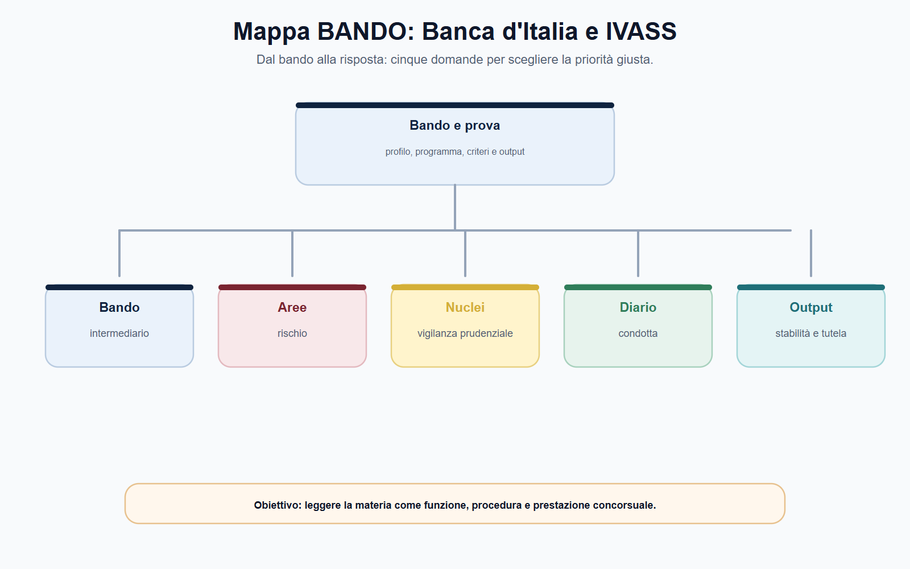
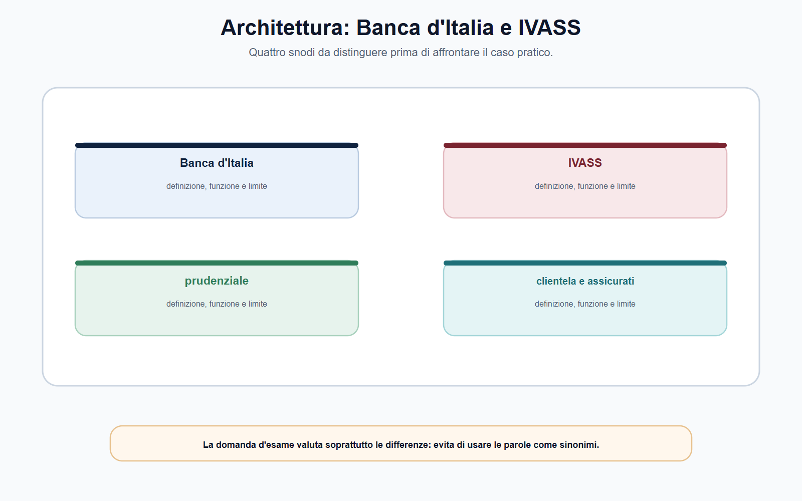
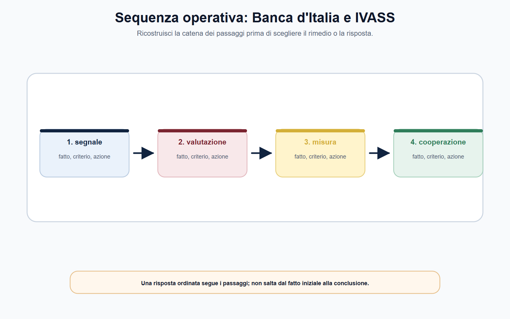
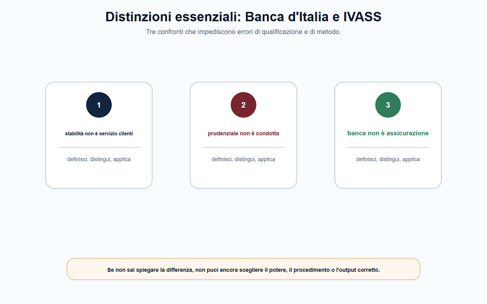

VOL-05 · Capitolo 12
M-FC05
Banca d'Italia e IVASS:
vigilanza prudenziale
Banche e imprese di assicurazione raccolgono risorse, assumono rischi e instaurano rapporti durevoli con i clienti. La vigilanza non si limita a reprimere un illecito già verificato: cerca di prevenire fragilità che potrebbero compromettere continuità del servizio, affidamento del pubblico e stabilità del sistema.
01 · Il problema in prova
Non usare «vigilanza» come ombrello
Il fatto segnala un rischio per la solidità dell'intermediario, una violazione di trasparenza o correttezza, oppure una pretesa contrattuale individuale? Prima il settore e il soggetto; poi prudenza, condotta, stabilità, rimedio e autorità competente.
Che cos'è
La vigilanza prudenziale verifica se l'intermediario è organizzato e gestito per affrontare i rischi della sua attività. Finalità: sana e prudente gestione e, su scala più ampia, stabilità ed efficienza del sistema. Non è un giudizio sul singolo contratto.
A che serve in prova
A non confondere Banca d'Italia e IVASS, e a non trasformare un reclamo in un ordine di pagamento. Un reclamo può rivelare una criticità sistemica; non sostituisce i rimedi contrattuali, stragiudiziali o giurisdizionali.
La solidità di una banca e la correttezza di un contratto sono questioni collegate, non coincidenti.
La vigilanza prudenziale non decide il merito della lite. Il cliente non è protetto soltanto dalla stabilità dell'intermediario: è protetto anche da trasparenza, comprensibilità delle condizioni e correttezza del rapporto, secondo i perimetri attribuiti.
02 · BANDO
Cinque decisioni su questo capitolo
Cerca nel programma vigilanza prudenziale, Unione bancaria, IVASS, tutela della clientela, Solvency II, DORA, ABF e Arbitro Assicurativo.
| Che cosa fai | Se la salti | |
|---|---|---|
| B — Bando | Segna Banca d'Italia, IVASS, BCE, SSM, prudenziale, clientela, reclami, ADR. | Studi due enti come se fossero lo stesso ufficio. |
| A — Aree | Collega banche, assicurazioni, condotta, stabilità, rimedi individuali, ICT. | Riduci tutto al patrimonio. |
| N — Nuclei | Prudenza ≠ condotta ≠ lite; Banca d'Italia ≠ IVASS; SSM ≠ ABF. | Attribuisci il sinistro alla vigilanza diretta della BCE. |
| D — Diario | Segna «ente solvibile = condotta corretta» e «reclamo = chiusura dell'impresa». | Ripeti le scorciatoie all'orale. |
| O — Output | Schema rischio–potere–prova e percorso di un reclamo assicurativo. | Elenco di funzioni senza riparto. |
03 · Piani
Quattro domande, quattro effetti
In una banca rilevano, fra gli altri, rischi di credito, liquidità, mercato e operativi. In un'impresa di assicurazione rilevano impegni assunti, rischi tecnici e finanziari, governance e scelte gestionali. Le categorie servono a capire perché l'autorità chiede dati e può intervenire.

Microprudenziale: condizione del singolo vigilato. Macroprudenziale: vulnerabilità che possono propagarsi nel sistema. Le due prospettive si integrano.
04 · Distinzione
Banca d'Italia non è IVASS
Due autorità, due mercati, due discipline. Coordinamento e prodotti ibridi non autorizzano a scegliere «per intuizione». Si ricostruiscono soggetto, attività, rischio e fonte.
| Banca d'Italia | IVASS | |
|---|---|---|
| Perimetro | Banche, gruppi e intermediari finanziari nei limiti delle fonti nazionali ed europee. | Imprese e gruppi assicurativi e riassicurativi, intermediari e altri soggetti del perimetro. |
| Prudenza | Sana e prudente gestione; SSM con la BCE secondo compiti ripartiti. | Solvibilità, riserve, rischi, governance; approccio basato sul rischio (Solvency II). |
| Condotta | Trasparenza e correttezza nei rapporti bancari e finanziari, nel perimetro attribuito. | Informazioni, distribuzione, reclami, rapporto con contraenti, assicurati e beneficiari. |
| ADR | Arbitro Bancario Finanziario: controversie nei limiti di competenza. Non irroga la sanzione. | Arbitro Assicurativo: ricorso dopo reclamo all'impresa o all'intermediario, nel perimetro previsto. |
05 · SSM
La BCE non cancella Banca d'Italia
Nel Meccanismo di vigilanza unico la BCE esercita la vigilanza diretta sugli enti significativi. Gli enti meno significativi sono vigilati direttamente dalle autorità nazionali, sotto la supervisione della BCE, che può assumere la vigilanza diretta quando ricorrono i presupposti. Gli enti meno significativi non stanno fuori dall'SSM.
Non è corretto dire che Banca d'Italia sia estranea alla vigilanza bancaria perché esiste la BCE, né che ogni decisione prudenziale sia nazionale. Soggetto vigilato, natura dell'atto e disciplina applicabile individuano la competenza concreta.
SSM, tutela della clientela e ABF non sono espressioni equivalenti. Dopo la distinzione si spiega il coordinamento.

06 · IVASS
Solvibilità e condotta di mercato
La vigilanza assicurativa considera situazione patrimoniale, finanziaria e tecnica, governance, assetti proprietari, rischi e capacità di adempiere agli impegni. Il dato contabile, da solo, non esaurisce la valutazione. La condotta riguarda chiarezza delle informazioni, correttezza della distribuzione e gestione dei reclami.
| Soggetto | Profilo | Documenti utili |
|---|---|---|
| Impresa | Solidità, riserve, rischi, governance, continuità. | Bilanci, relazioni sui rischi, procedure, flussi. |
| Gruppo | Esposizioni e controlli su base di gruppo. | Struttura, partecipazioni, concentrazioni. |
| Intermediario | Condotta, informazioni, distribuzione. | Preventivi, informativa, bisogni, reclami. |
| Assicurato | Tutela nel rapporto e rimedi. | Polizza, denuncia, corrispondenza, risposta. |
La solvibilità protegge anche la collettività degli assicurati; non decide se una particolare garanzia è operante nel singolo sinistro. Quella domanda dipende da contratto, fatti, clausole, documenti e rimedi applicabili.
07 · Sequenza
Dal segnale all'intervento
Segnalazioni prudenziali, bilanci, ispezioni, reclami e dati sulla distribuzione consentono di individuare anomalie. Il reclamo è una doppia fonte: per il cittadino espone una criticità; per l'autorità può indicare disfunzioni ripetute. Il passaggio alla decisione richiede istruttoria e proporzionalità.

Ispezione, richiesta di informazioni, prescrizione, intervento organizzativo o sanzione non sono una scala rigida. Dipendono dal potere conferito, dalla gravità, dalla prova e dalle garanzie.
08 · Fonti
Solvency II e DORA: due rischi
Solvency II organizza la vigilanza assicurativa sul rischio: requisiti quantitativi, governance, informativa e supervisione. Non basta citare il capitale. DORA, applicabile dal 17 gennaio 2025, riguarda la resilienza operativa digitale. Il d.lgs. n. 23/2025 adegua il quadro nazionale e distribuisce le competenze fra le autorità settoriali.
Solvency II
Riserve, rischi tecnici e finanziari, controlli, valutazione interna e poteri dell'autorità. Un dato patrimoniale isolato non sostituisce la lettura della gestione.
DORA
Governance del rischio ICT, incidenti, test di resilienza, fornitori terzi. Non è una certificazione che l'ufficio acquista all'esterno: l'organo di gestione conserva responsabilità.

09 · ADR
Reclamo, ABF, Arbitro Assicurativo
Nei servizi di pagamento e nei rapporti bancari, vigilanza e rimedio individuale restano separati. L'ABF decide controversie nei limiti della propria competenza; non irroga la sanzione. Dal 15 gennaio 2026 il pubblico può presentare ricorso online all'Arbitro Assicurativo, sostenuto nel funzionamento dall'IVASS e deciso sulla base dei documenti.
Reclamo
All'intermediario o all'impresa. Per l'Arbitro Assicurativo è condizione di ammissibilità.
ADR
ABF o Arbitro Assicurativo nel perimetro. Verifica materia, soggetti, valore e termini vigenti.
Giudice
Tutela residuale. L'autorità di vigilanza non è il giudice di ogni sinistro.
Alla data di cutoff la pagina IVASS indica, per l'Arbitro Assicurativo, un costo di 20 euro rimborsato in caso di accoglimento e una decisione entro 180 giorni, prorogabile di 90 per casi complessi. Verificare sulla fonte vigente. Previo reclamo e competenza restano la regola stabile.
10 · Caso guidato
Sinistro negato e segnali di fragilità
La compagnia nega la liquidazione richiamando una clausola di esclusione; il cliente sostiene che non gli sia stata spiegata. Numerosi reclami riguardano la stessa polizza; articoli di stampa riferiscono difficoltà finanziarie. Il cliente chiede a IVASS di ordinare il pagamento e di chiudere l'impresa.
| Piano | Ragionamento |
|---|---|
| Pretesa individuale | Polizza, clausola, informazioni rese, distribuzione, denuncia, risposta. Il diniego ritenuto ingiusto non dimostra ancora una carenza prudenziale. |
| Condotta | I reclami ripetuti possono segnalare un problema di prodotto, rete, procedure o controlli. IVASS può valutarne la serialità. |
| Prudenza | Le notizie finanziarie aprono un piano da valutare con dati su patrimonio, rischi, liquidità e capacità di far fronte agli impegni. |
| Chiusura | Contratto e rimedio del cliente; condotta e vigilanza di mercato; solidità e vigilanza prudenziale. Poi fonte, fatti, eventuali interventi. |
11 · Verifica
Due domande da saper spiegare
Funzioni di Banca d'Italia e IVASS
La vigilanza prudenziale valuta rischi, organizzazione, risorse e controlli. Banca d'Italia opera nel settore bancario e finanziario e tutela la clientela nei perimetri fissati, in coordinamento con la BCE. IVASS vigila su imprese, gruppi e intermediari assicurativi, unendo solvibilità e condotta. Reclamo, vigilanza, ADR e giudice hanno funzioni diverse.
Se la compagnia è solvibile, il diniego non può essere scorretto?
No. Solvibilità e correttezza della pratica di sinistro sono profili diversi. La prima riguarda la capacità di far fronte complessivamente agli impegni; il secondo richiede contratto, fatti, informazioni, procedura e regole applicabili.
12 · Mini-esercizio
Polizza distribuita da una banca
Compila la scheda. L'esercizio è corretto se separa il rischio dell'impresa dalla questione contrattuale del cliente e non attribuisce un potere senza fonte.
| Campo | Appunto da raccogliere |
|---|---|
| Soggetti | Cliente, banca distributrice, impresa assicurativa, eventuale intermediario. |
| Prodotto e fatto | Polizza, garanzia, vendita, sinistro o reclamo specifico. |
| Piano | Prudenziale, condotta, trasparenza, contratto o stabilità sistemica. |
| Documenti | Polizza, preventivo, informativa, comunicazioni, denuncia e risposta. |
| Fonte e autorità | Disciplina da verificare: IVASS, Banca d'Italia, CONSOB o altra autorità. |
| Tutela | Reclamo, ADR o giudice nel perimetro concretamente applicabile. |
13 · Errori
Tre formule da non usare
Solo il patrimonio
«Banca d'Italia e IVASS proteggono il cliente soltanto controllando il patrimonio». La stabilità è essenziale, ma non esaurisce trasparenza, correttezza, reclami e rimedi.
SSM = ABF
Il meccanismo europeo di vigilanza e l'arbitro delle controversie bancarie hanno funzione, presupposti e effetti diversi.
Reclamo = liquidazione
La vigilanza non è un servizio di liquidazione dei sinistri o di ricalcolo automatico del contratto. I due percorsi rafforzano la tutela se restano distinti.
Possono coinvolgere fonti, autorità e riparti ulteriori. Tutela della clientela, antiriciclaggio e risoluzione non sono una semplice appendice della prudenza: si qualificano autonomamente. Si parte dal fatto, non dal nome dell'autorità.
14 · Da tenere ferme
Cinque regole, con il perché
1. Prudenza, condotta, stabilità sistemica e tutela individuale sono quattro piani: ciascuno ha fonte, potere e procedimento.
2. Banca d'Italia non è IVASS: banche e assicurazioni hanno mercati, rischi e autorità distinte, anche quando il prodotto è ibrido.
3. La BCE non cancella Banca d'Italia; gli enti meno significativi restano nell'SSM sotto supervisione europea.
4. Un reclamo può alimentare la vigilanza, ma non decide il merito della lite né la solvibilità dell'impresa.
5. ABF e Arbitro Assicurativo sono rimedi stragiudiziali nei rispettivi perimetri, non sezioni sanzionatorie.
15 · Cinque righe
Da sapere prima dell'orale
La vigilanza prudenziale verifica la capacità dell'intermediario di operare in modo sano e solido, controllando rischi, organizzazione e risorse. La Banca d'Italia concorre alla vigilanza bancaria e finanziaria e tutela la clientela nei rispettivi perimetri; nell'Unione bancaria opera in coordinamento con la BCE. IVASS vigila su imprese, gruppi e intermediari assicurativi, unendo solvibilità e condotta. Trasparenza e correttezza non coincidono con la stabilità patrimoniale. Reclamo, vigilanza e soluzione della controversia individuale sono strumenti diversi, da collegare senza confonderli.
Una polizza venduta da una banca può toccare IVASS, Banca d'Italia e, se il prodotto lo richiede, CONSOB. Si formula un'ipotesi, si identifica la fonte e si chiarisce quale profilo — prudenziale, di mercato, di condotta o individuale — richiede l'intervento.
Prossimo capitolo
Garante privacy: poteri, procedimenti, cooperazione
Dal rischio dell'intermediario al trattamento dei dati. Il Garante non è AGCOM e non è lo sportello di ogni disaccordo. Si parte dal trattamento concreto.